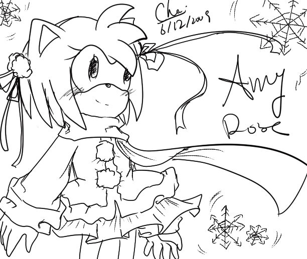
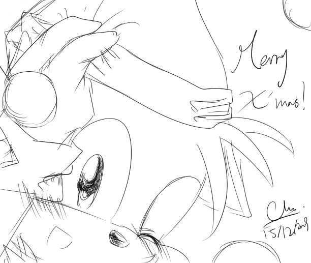
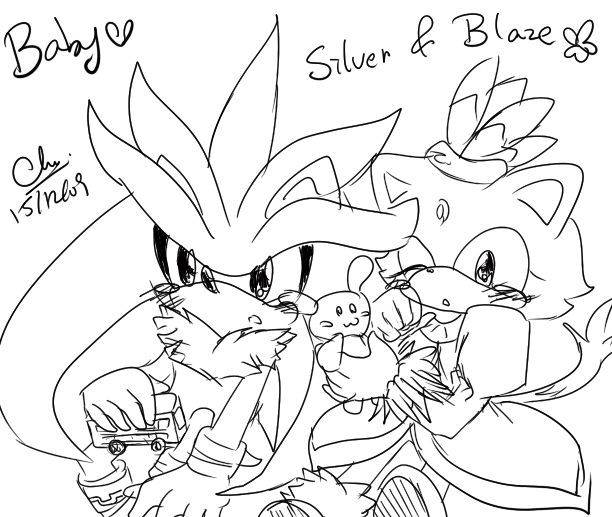
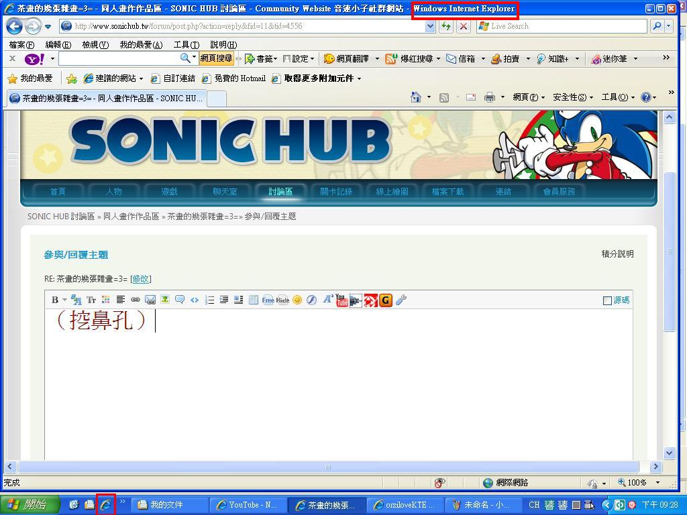

🏠 首頁
📁 同人畫作作品區
茶畫的幾張雜畫=3=
👤 cha5903
🕐 2009-12-15 13:56:34
因為登入時總遇到\"驗證碼不對確\"的問題...
導致上也上不了來=O=[只能當訪客
今次能登入還真幸運=W=[巴
好了,題外話完畢
最近畫了幾張畫
可是也給不了名稱呢-W-

附件: CHA21.png
這是冬日+AMY -W-[眾:不像冬日
附件: CHA23.png
這是夜+雲+月亮+花瓣+CHEESE+CREAM 暫名\"花月夜\"[眾:完全沒感覺

附件: 22.png
這是聖誕帽+TAILS ~聖誕節~TAILS跟大家微笑一個喔>V<[[巴
附件: 24.png
這是不知名...[巴 AMY在對禿毛說甚麼呢~[炸

附件: 26.png
嬰兒小銀&BLAZE -W-
謝謝大家看眼殘畫!!
👤 gigi-21
🕐 2009-12-15 14:01:23
畫得好好喔^^
👤 acq445
🕐 2009-12-15 14:32:01
畫得好好唷![:smile42:]
尤其是tails那一張我覺得好可愛唷!>ˇ<
👤 qaz123035
🕐 2009-12-16 00:40:59
我只看到blaze(愛貓者)
畫的不錯~~~彩圖希望XD
👤 Snowy-su
🕐 2009-12-16 04:49:03
眼殘? 我覺得還好啦~
好可愛的畫風, 禿和Amy一起的圖好閃 (墨鏡mode)
不如試試上色? [:egg34:]
👤 s041117
🕐 2009-12-16 08:49:56
long timw no see了畫的真美
用回覆頁面登入吧
👤 gigi-21
🕐 2009-12-16 10:00:41
6#
s041117
她是驗證碼不對確[:baozi9:] ,可以不用登出.下次不用登入[:baozi27:]
👤 s041117
🕐 2009-12-16 10:22:46
7#
gigi-21
正常是管理員不修理
👤 aoifh
🕐 2009-12-16 10:38:10
不是不修，驗證碼錯誤的問題沒人回報。
所以我們也不清楚哪邊出了問題，可以的話可以描述過程，以及擷取畫面。所使用的瀏覽器及版本。
👤 s041117
🕐 2009-12-16 10:45:51
[i=s] 本文章最後由 s041117 於 2009/12/16 06:48 PM 編輯 [/i]
9#
aoifh
我已經回報了一次
http://www.sonichub.tw/forum/thread-4371-1-1.html
先寫上了悵:s041117 密:******
寫上正確的驗證瑪後顯示錯誤
👤 orzilovepm
🕐 2009-12-17 13:37:24
其實我覺得樓主的手繪應該也很不錯
光是這些線稿就已經非常細膩且流利
如果能加上一些陰影應該會更讚～！
原來是登入不順，難怪最近一段時間沒看到樓主的出現 ＝u＝＂
（嘛，以下內容就偏離主題囉～）
我目前用的是ＩＥ８：

附件: 321.JPG
基本上瀏覽器介面可從紅色框起來的部份來分辨
火狐的話就是會有畫個一隻紅狐包圍一顆地球的圖案，諸如此類...
我目前登入幾乎不成問題，除了偶爾幾次驗證碼的文字顯示不清之外
（像今天我就錯把Ｇ看成６，因為Ｇ粗體粗到讓我眼殘...），其餘都很正常
有問題的人不妨自行截圖給版務們瞧吧，至少也要說明一下各位自己的瀏覽器等級型號之類的
（囉唆完畢）
👤 caicaibia
🕐 2009-12-19 13:21:43
型准赞XD~手似乎还有一点问题……【看来四肢是普遍的难题啊，我也在挣扎这个OTL】